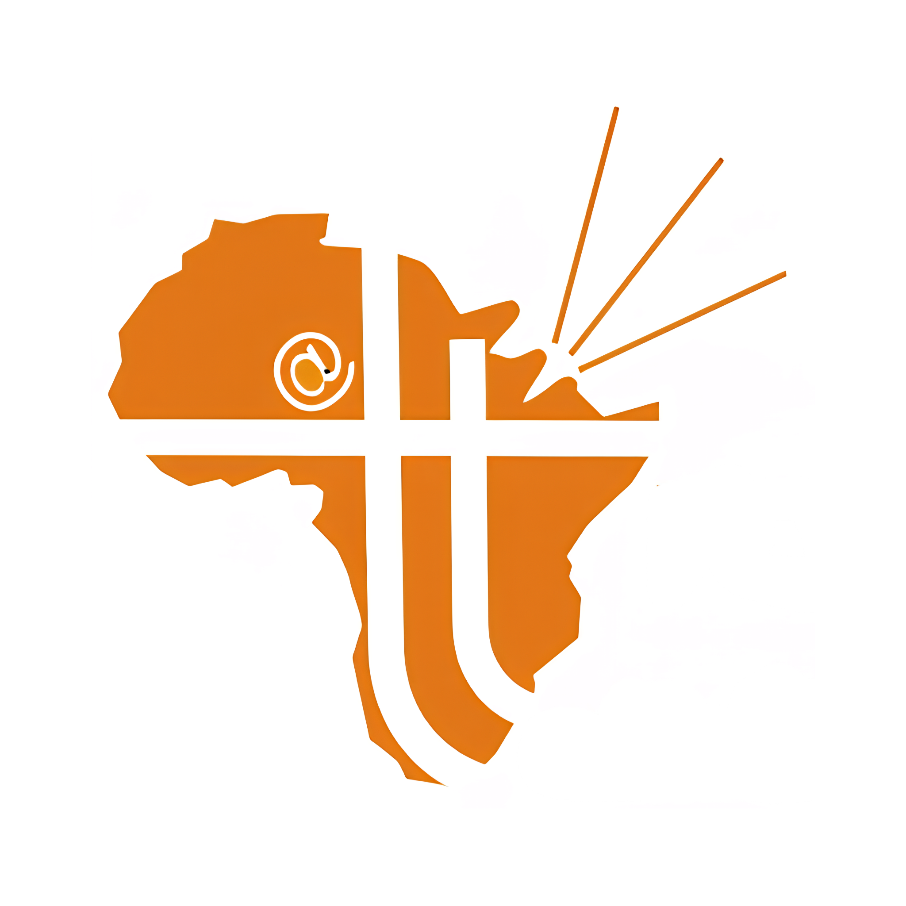

Travel Talk Africa
Interactive Media • Web Design • Travel News Platform

Website
Travel Talk Africa was designed as a digital destination for African travel news, safari insights, ESG travel, expert tips, and destination discovery. The interface prioritises clear navigation, strong travel imagery, and readable content blocks so users can quickly explore travel information across the continent.
Video Content
Short-form motion content was used to capture attention and communicate the energy of African travel experiences. This supports the platform’s editorial identity by turning travel information into quick, engaging visual storytelling.
Social Content
Supporting social assets extended the Travel Talk Africa identity beyond the website. These visuals keep the orange brand mark visible while presenting the platform as energetic, recognisable, and connected to African destination storytelling.
